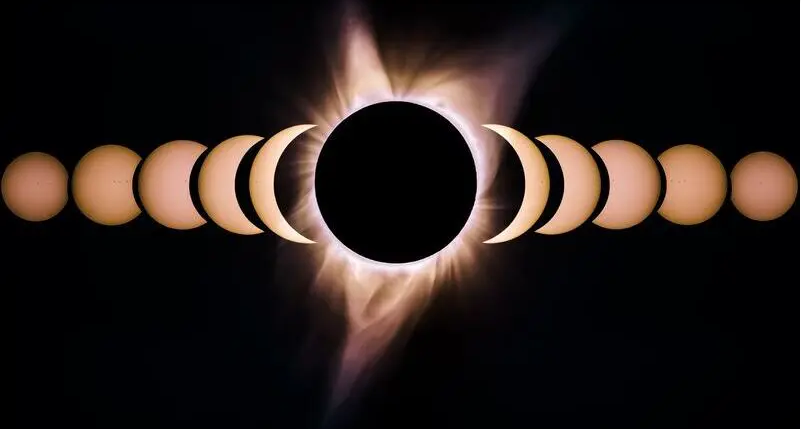

Cuándo se produce un eclipse:
1.- condición: que el Sol, la Luna y la Tierra estén alineados de forma perfecta (eclipse total o anular) o de forma casi perfecta (eclipse parcial). Esta alineación astronómica es conocida como sizigia y solo se produce cuando la Luna y el Sol se alinean en un nodo lunar… Los nodos lunares son 2 puntos en los que la órbita de la Luna cruza la eclíptica… La eclíptica es la trayectoria “aparente” que sigue el Sol visto desde nuestra perspectiva desde la Tierra.
2.- condición: pero para que se produzca un eclipse de Sol debe darse una condición más. Solo habrá un eclipse solar si la alineación entre los 3 (el Sol, la Luna y la Tierra) se produce cuando la Luna está en fase de Luna nueva.
